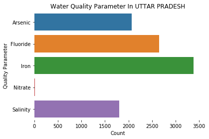

State Name Quality Quality Parameter count
0 ANDHRA PRADESH 1 Fluoride 2193
1 ANDHRA PRADESH 4 Salinity 695
--------------------------------------------------------
State Name Quality Quality Parameter count
2 ARUNACHAL PRADESH 2 Iron 612
--------------------------------------------------------
State Name Quality Quality Parameter count
3 ASSAM 0 Arsenic 4775
4 ASSAM 1 Fluoride 1037
5 ASSAM 2 Iron 74098
--------------------------------------------------------
State Name Quality Quality Parameter count
6 BIHAR 0 Arsenic 6215
7 BIHAR 1 Fluoride 16150
8 BIHAR 2 Iron 69970
9 BIHAR 3 Nitrate 1
--------------------------------------------------------
State Name Quality Quality Parameter count
10 CHATTISGARH 0 Arsenic 12
11 CHATTISGARH 1 Fluoride 257
12 CHATTISGARH 2 Iron 24439
13 CHATTISGARH 3 Nitrate 8
14 CHATTISGARH 4 Salinity 346
--------------------------------------------------------
State Name Quality Quality Parameter count
15 CHHATTISGARH 1 Fluoride 313
16 CHHATTISGARH 2 Iron 8339
17 CHHATTISGARH 4 Salinity 163
--------------------------------------------------------
State Name Quality Quality Parameter count
18 GUJARAT 1 Fluoride 804
19 GUJARAT 2 Iron 1
20 GUJARAT 3 Nitrate 714
21 GUJARAT 4 Salinity 573
--------------------------------------------------------
State Name Quality Quality Parameter count
22 HARYANA 1 Fluoride 244
23 HARYANA 4 Salinity 18
--------------------------------------------------------
State Name Quality Quality Parameter count
24 HIMACHAL PRADESH 0 Arsenic 8
25 HIMACHAL PRADESH 2 Iron 8
26 HIMACHAL PRADESH 4 Salinity 72
--------------------------------------------------------
State Name Quality Quality Parameter count
27 JAMMU AND KASHMIR 1 Fluoride 4
28 JAMMU AND KASHMIR 2 Iron 23
29 JAMMU AND KASHMIR 4 Salinity 40
--------------------------------------------------------
State Name Quality Quality Parameter count
30 JHARKHAND 0 Arsenic 28
31 JHARKHAND 1 Fluoride 626
32 JHARKHAND 2 Iron 3254
33 JHARKHAND 3 Nitrate 4
34 JHARKHAND 4 Salinity 1
--------------------------------------------------------
State Name Quality Quality Parameter count
35 KARNATAKA 0 Arsenic 116
36 KARNATAKA 1 Fluoride 13156
37 KARNATAKA 2 Iron 9896
38 KARNATAKA 3 Nitrate 3858
39 KARNATAKA 4 Salinity 3798
--------------------------------------------------------
State Name Quality Quality Parameter count
40 KERALA 1 Fluoride 496
41 KERALA 2 Iron 3161
42 KERALA 3 Nitrate 237
43 KERALA 4 Salinity 906
--------------------------------------------------------
State Name Quality Quality Parameter count
44 MADHYA PRADESH 1 Fluoride 12762
45 MADHYA PRADESH 2 Iron 435
46 MADHYA PRADESH 3 Nitrate 13
47 MADHYA PRADESH 4 Salinity 1239
--------------------------------------------------------
State Name Quality Quality Parameter count
48 MAHARASHTRA 0 Arsenic 1
49 MAHARASHTRA 1 Fluoride 4184
50 MAHARASHTRA 2 Iron 2751
51 MAHARASHTRA 3 Nitrate 3707
52 MAHARASHTRA 4 Salinity 1837
--------------------------------------------------------
State Name Quality Quality Parameter count
53 MANIPUR 2 Iron 14
--------------------------------------------------------
State Name Quality Quality Parameter count
54 MEGHALAYA 1 Fluoride 2
55 MEGHALAYA 2 Iron 425
--------------------------------------------------------
State Name Quality Quality Parameter count
56 NAGALAND 2 Iron 618
--------------------------------------------------------
State Name Quality Quality Parameter count
57 ORISSA 0 Arsenic 2
58 ORISSA 1 Fluoride 2212
59 ORISSA 2 Iron 59905
60 ORISSA 3 Nitrate 133
61 ORISSA 4 Salinity 6368
--------------------------------------------------------
State Name Quality Quality Parameter count
62 PUDUCHERRY 2 Iron 16
63 PUDUCHERRY 4 Salinity 1
--------------------------------------------------------
State Name Quality Quality Parameter count
64 PUNJAB 1 Fluoride 102
65 PUNJAB 2 Iron 60
66 PUNJAB 4 Salinity 894
--------------------------------------------------------
State Name Quality Quality Parameter count
67 RAJASTHAN 0 Arsenic 87
68 RAJASTHAN 1 Fluoride 40417
69 RAJASTHAN 2 Iron 263
70 RAJASTHAN 3 Nitrate 3513
71 RAJASTHAN 4 Salinity 87137
--------------------------------------------------------
State Name Quality Quality Parameter count
72 TAMIL NADU 1 Fluoride 77
73 TAMIL NADU 2 Iron 2119
74 TAMIL NADU 3 Nitrate 116
75 TAMIL NADU 4 Salinity 852
--------------------------------------------------------
State Name Quality Quality Parameter count
76 TRIPURA 2 Iron 26235
--------------------------------------------------------

State Name Quality Quality Parameter count
77 UTTAR PRADESH 0 Arsenic 2069
78 UTTAR PRADESH 1 Fluoride 2646
79 UTTAR PRADESH 2 Iron 3376
80 UTTAR PRADESH 3 Nitrate 19
81 UTTAR PRADESH 4 Salinity 1808
--------------------------------------------------------
State Name Quality Quality Parameter count
82 UTTARAKHAND 0 Arsenic 10
83 UTTARAKHAND 1 Fluoride 6
84 UTTARAKHAND 2 Iron 35
85 UTTARAKHAND 3 Nitrate 6
--------------------------------------------------------
State Name Quality Quality Parameter count
86 WEST BENGAL 0 Arsenic 12382
87 WEST BENGAL 1 Fluoride 3353
88 WEST BENGAL 2 Iron 12191
89 WEST BENGAL 4 Salinity 2175
--------------------------------------------------------
In [23]: